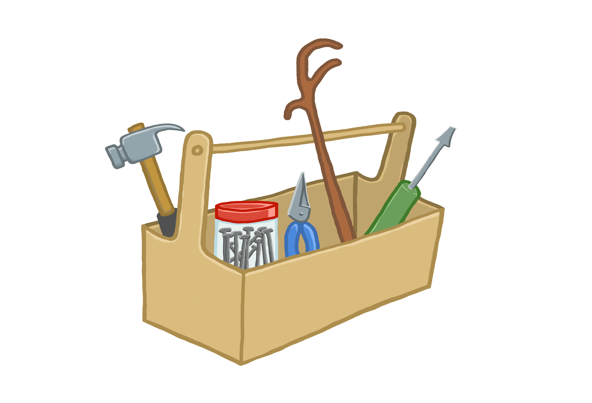

AI services at UiO
Chapter 5 is about approved AI tools at UiO. In this chapter you will learn what the tools can be used for, why it is important to use them, and which services are best suited to different purposes.
- The tools presented in this chapter are:
- GPT UiO
- Autotekst and Nettskjema-diktafon
- Gemini and Gemini Notebook
- Microsoft Copilot Chat


Illustration: Tina Morønning Ruud
Learning objectives
- I know which UiO data can be shared with the various approved AI services
- I can choose the right AI service based on need and data classification
- I know how to get access to and use the various approved AI tools